Portfolio Backtest Evidence: 1997-2026
Net USD evidence for every current portfolio output, regional index benchmarks, and an independent point-in-time index challenger.
The test covers 29.6 years and 13 portfolio outputs. The current portfolio starts at $186,060,522 and finishes at $9,013,102,206 after modeled costs, a net PnL of $8,827,041,684. On the common investable window, Portfolio-Aware Overlay has the highest Sharpe ratio at 0.85. The long results replay securities selected with today's information, so they describe exposure and path behavior rather than proving historical selection skill.
Executive Comparison
| Portfolio | Start | cagr | Volatility | sharpe | Max drawdown | Ending value | PnL |
|---|---|---|---|---|---|---|---|
| Portfolio-Aware Overlay | $186,060,522 | 13.69% | 15.47% | 0.77 | -47.39% | $8,192,397,366 | $8,006,336,844 |
| Current Portfolio | $186,060,522 | 14.06% | 16.66% | 0.75 | -42.57% | $9,013,102,206 | $8,827,041,684 |
| Risk-Parity Optimiser | $100,000 | 10.41% | 11.42% | 0.74 | -29.10% | $1,859,175 | $1,759,175 |
| LLM Analyst Benchmark | $100,000 | 5.52% | 5.31% | 0.63 | -13.29% | $488,283 | $388,283 |
| Score-Weighted Optimiser | $100,000 | 9.81% | 13.05% | 0.62 | -33.64% | $1,580,605 | $1,480,605 |
| Regime-Aware Optimiser | $100,000 | 10.11% | 13.80% | 0.61 | -39.50% | $1,713,229 | $1,613,229 |
| Clean-Sheet Quant | $100,000 | 8.50% | 10.81% | 0.61 | -36.03% | $1,108,623 | $1,008,623 |
| Mean-Variance Optimiser | $100,000 | 9.02% | 11.88% | 0.61 | -37.88% | $1,278,845 | $1,178,845 |
| CVaR-Constrained Optimiser | $100,000 | 8.69% | 11.56% | 0.59 | -37.09% | $1,168,765 | $1,068,765 |
| Dividend-Income Optimiser | $100,000 | 10.60% | 15.35% | 0.59 | -45.88% | $1,951,982 | $1,851,982 |
| Final Resolved Portfolio | $186,060,522 | 8.34% | 11.32% | 0.58 | -37.34% | $1,976,496,316 | $1,790,435,794 |
| DRL Baseline Portfolio | $186,060,522 | 8.34% | 11.32% | 0.58 | -37.34% | $1,976,496,316 | $1,790,435,794 |
| DRL Raw Challenger | $186,060,522 | 8.05% | 10.77% | 0.57 | -35.80% | $1,826,083,914 | $1,640,023,392 |
| Trend and Risk-Controlled Regional Indices | $100,000 | 4.43% | 8.61% | 0.30 | -23.30% | $358,822 | $258,822 |
The performance table converts each assigned starting balance into a fully net ending balance. CAGR is the smooth annual growth rate, volatility measures return variation, Sharpe compares excess return with total variability, and maximum drawdown is the deepest peak-to-trough loss. Portfolio-Aware Overlay records the highest common-window CAGR at 14.42% alongside a -26.94% maximum drawdown.
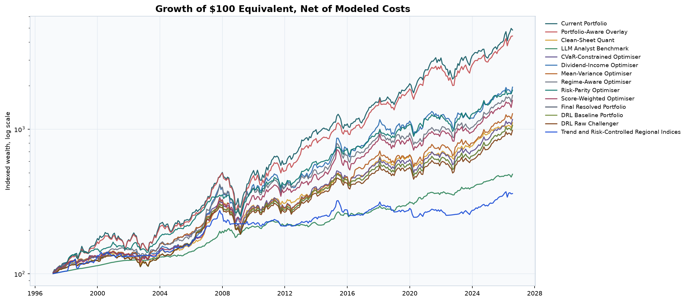
Indexed growth uses each portfolio's assigned capital only for PnL; this chart rebases every series to 100 for comparability.
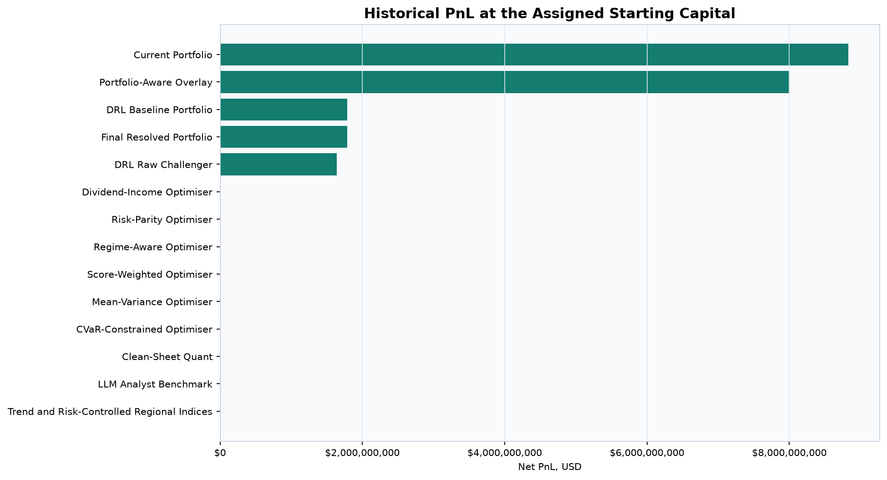
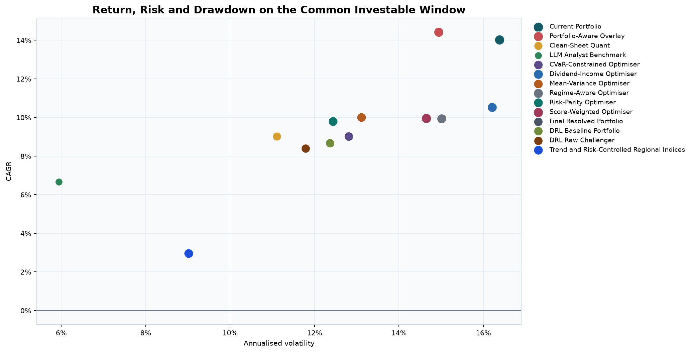
Paper Ratios and Annual Bank Charge
Performance Ratios on the Common Investable Window
| Portfolio or index | cagr | sharpe | Lo Sharpe | sortino | calmar | Max drawdown | Monthly VaR 5% | Monthly ES 5% | PSR | MinTRL months | DSR |
|---|---|---|---|---|---|---|---|---|---|---|---|
| S&P 500 Index | 11.96% | 0.71 | 0.97 | 1.13 | 0.48 | -24.77% | 6.53% | 8.77% | |||
| LLM Analyst Benchmark | 6.66% | 0.79 | 0.89 | 1.45 | 0.88 | -7.55% | 2.25% | 3.05% | 99.97% | 83.645 | 99.07% |
| Dow Jones Industrial Average | 10.09% | 0.60 | 0.86 | 0.96 | 0.43 | -23.20% | 5.48% | 8.35% | |||
| Current Portfolio | 14.03% | 0.77 | 0.81 | 1.27 | 0.49 | -28.91% | 6.87% | 9.21% | 99.99% | 64.858 | 99.79% |
| Clean-Sheet Quant | 9.01% | 0.66 | 0.69 | 1.16 | 0.52 | -17.28% | 4.38% | 6.02% | 99.94% | 92.123 | 98.62% |
| Final Resolved Portfolio | 8.68% | 0.58 | 0.62 | 0.97 | 0.43 | -20.40% | 4.91% | 6.74% | 99.88% | 104.048 | 97.78% |
| DAX Performance Index | 7.36% | 0.37 | 0.40 | 0.57 | 0.20 | -36.98% | 8.21% | 10.99% | |||
| Trend and Risk-Controlled Regional Indices | 2.95% | 0.15 | 0.15 | 0.21 | 0.13 | -23.30% | 4.37% | 6.42% | 93.87% | 401.646 | 70.10% |
| FTSE 100 Index | 2.13% | 0.09 | 0.10 | 0.12 | 0.06 | -37.85% | 6.78% | 9.76% |
Sharpe uses all volatility; Lo-adjusted Sharpe allows for serially related monthly returns; Sortino counts downside variability; and Calmar divides CAGR by maximum drawdown. Monthly VaR is the 5% loss threshold, while expected shortfall is the average loss beyond it. PSR measures confidence that Sharpe clears a hurdle, MinTRL estimates the required history, and DSR discounts non-normal returns and multiple trials. SPDR S&P 500 ETF adjusted-close proxy has the strongest Lo-adjusted Sharpe at 1.13.
Annual Fee Assumption
| Charge | Annual rate | Basis points | Assessment month | Reference AUM | Bank charge | Calculated charge | Difference | Benchmarks charged |
|---|---|---|---|---|---|---|---|---|
| Annual bank custody and AUM charge | 0.25% | 25.000 | 12 | $186,060,522 | $465,151 | $465,151 | $0 | False |
The bank charge is 25 basis points, assessed once in month 12 on then-current AUM. At reference AUM of $186,060,522, the configured and calculated charges equal $465,151 and differ by $0. The same percentage, not the full reference-dollar amount, applies to each portfolio; external benchmarks remain uncharged.
Fee Impact by Portfolio
| Portfolio | Trading costs | Bank fees paid | Total modeled costs | Annual assessments | Ending value before fee | Ending value after fee | Ending-value fee drag | Effective fee bps |
|---|---|---|---|---|---|---|---|---|
| current_portfolio | $33,220,075 | $155,185,032 | $188,405,107 | 29 | $9,691,702,389 | $9,013,102,206 | $678,600,184 | 25.000 |
| portfolio_aware_overlay | $41,187,351 | $141,417,818 | $182,605,169 | 29 | $8,809,206,344 | $8,192,397,366 | $616,808,978 | 25.000 |
| drl_baseline | $19,357,180 | $49,663,293 | $69,020,473 | 29 | $2,125,307,539 | $1,976,496,316 | $148,811,223 | 25.000 |
| final_portfolio | $19,357,180 | $49,663,293 | $69,020,473 | 29 | $2,125,307,539 | $1,976,496,316 | $148,811,223 | 25.000 |
| drl_challenger_raw | $17,817,900 | $47,249,335 | $65,067,235 | 29 | $1,963,570,525 | $1,826,083,914 | $137,486,611 | 25.000 |
| optimised_dividend_income | $11,928 | $44,804 | $56,732 | 29 | $2,098,948 | $1,951,982 | $146,966 | 25.000 |
| optimised_risk_parity | $9,372 | $44,646 | $54,018 | 29 | $1,999,153 | $1,859,175 | $139,978 | 25.000 |
| optimised_regime_aware | $9,820 | $39,656 | $49,477 | 29 | $1,842,219 | $1,713,229 | $128,990 | 25.000 |
| optimised_score_weighted | $8,514 | $36,781 | $45,295 | 29 | $1,699,609 | $1,580,605 | $119,004 | 25.000 |
| optimised_mean_variance | $7,114 | $30,427 | $37,541 | 29 | $1,375,130 | $1,278,845 | $96,285 | 25.000 |
| clean_sheet | $4,804 | $28,957 | $33,761 | 29 | $1,192,091 | $1,108,623 | $83,469 | 25.000 |
| optimised_cvar_constrained | $6,569 | $28,591 | $35,160 | 29 | $1,256,762 | $1,168,765 | $87,997 | 25.000 |
| llm_benchmark | $1,620 | $16,937 | $18,557 | 29 | $525,046 | $488,283 | $36,763 | 25.000 |
| trend_risk_controlled_indices | $12,171 | $16,094 | $28,265 | 29 | $385,838 | $358,822 | $27,016 | 25.000 |
The fee-impact table separates trading costs from the annual bank charge and compares ending value before bank fees with the fully net result. current_portfolio pays the largest cumulative bank charge at $155,185,032, with ending-value fee drag of $678,600,184.
Major Index Benchmarks
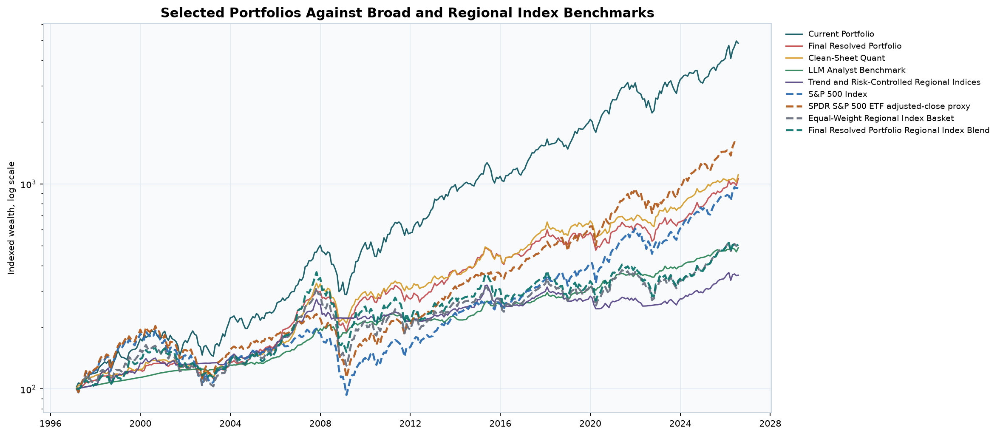
Dashed lines are broad or regional index benchmarks. Portfolio-specific relative statistics use each allocation's geographic index blend on the common investable window.
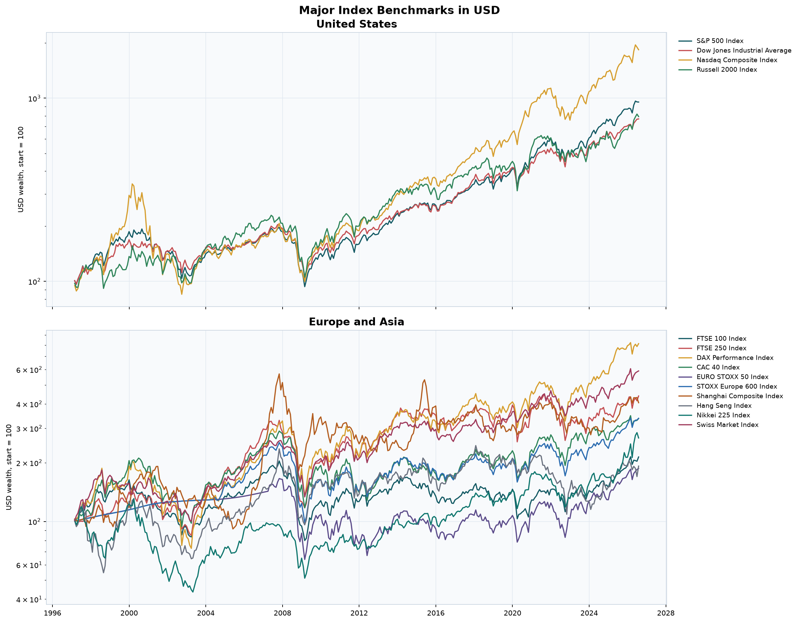
Standalone Index Performance, Common Investable Window
| Index benchmark | cagr | Volatility | sharpe | Max drawdown | Ending value on $100k |
|---|---|---|---|---|---|
| Nasdaq Composite Index | 15.79% | 18.12% | 0.80 | -33.10% | $580,668 |
| SPDR S&P 500 ETF adjusted-close proxy | 13.83% | 14.81% | 0.82 | -23.93% | $473,159 |
| S&P 500 Index | 11.96% | 14.82% | 0.71 | -24.77% | $387,934 |
| S&P 500 Index | 11.96% | 14.82% | 0.71 | -24.77% | $387,934 |
| iShares MSCI ACWI adjusted-close proxy | 10.52% | 14.24% | 0.64 | -25.74% | $332,000 |
| Dow Jones Industrial Average | 10.09% | 14.67% | 0.60 | -23.20% | $316,875 |
| Nikkei 225 Index | 8.49% | 17.39% | 0.44 | -34.01% | $265,996 |
| Russell 2000 Index | 8.35% | 20.03% | 0.40 | -33.76% | $261,710 |
| DAX Performance Index | 7.36% | 19.14% | 0.37 | -36.98% | $234,367 |
| iShares MSCI EAFE adjusted-close proxy | 6.99% | 14.65% | 0.40 | -27.62% | $225,043 |
| Swiss Market Index | 5.58% | 14.31% | 0.32 | -25.92% | $191,793 |
| Equal-Weight Regional Index Basket | 5.52% | 14.75% | 0.31 | -28.51% | $190,623 |
| EURO STOXX 50 Index | 4.80% | 18.60% | 0.24 | -34.44% | $175,560 |
| CAC 40 Index | 4.64% | 18.09% | 0.23 | -30.37% | $172,405 |
| STOXX Europe 600 Index | 4.33% | 16.07% | 0.22 | -31.71% | $166,219 |
| Shanghai Composite Index | 3.95% | 21.42% | 0.20 | -51.25% | $159,187 |
| FTSE 100 Index | 2.13% | 15.56% | 0.09 | -37.85% | $128,794 |
| FTSE 250 Index | 1.77% | 19.69% | 0.09 | -42.31% | $123,400 |
| Hang Seng Index | 0.27% | 21.05% | 0.02 | -55.51% | $103,332 |
Each standalone index is converted to USD and replayed as an uncharged buy-and-hold reference on $100,000. Price-index and total-return conventions differ, so these are broad path comparisons rather than perfectly dividend-consistent alpha tests. Nasdaq Composite Index has the highest common-window CAGR at 15.79%.
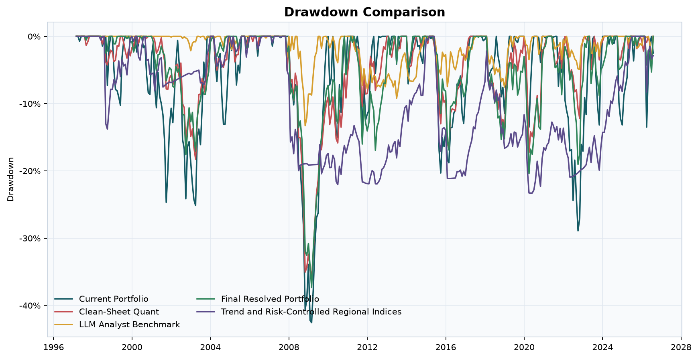
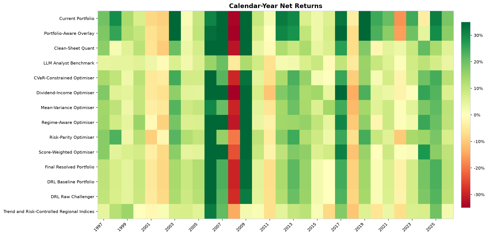
Portfolio-Relative Regional Benchmark Results
| Portfolio | Regional benchmark | annualised_alpha | beta | tracking_error | information_ratio | active_return_cumulative | Relative PnL |
|---|---|---|---|---|---|---|---|
| Portfolio-Aware Overlay | Portfolio-Aware Overlay Regional Index Blend | 8.90% | 0.86 | 7.01% | 1.14 | 161.42% | $578,603,131 |
| LLM Analyst Benchmark | LLM Analyst Benchmark Regional Index Blend | 4.22% | 0.86 | 3.87% | 0.99 | 57.32% | $79,012 |
| Current Portfolio | Current Portfolio Regional Index Blend | 9.10% | 0.85 | 9.15% | 0.89 | 162.74% | $556,961,826 |
| Dividend-Income Optimiser | Dividend-Income Optimiser Regional Index Blend | 6.05% | 0.93 | 7.07% | 0.80 | 95.48% | $162,399 |
| Regime-Aware Optimiser | Regime-Aware Optimiser Regional Index Blend | 5.83% | 0.85 | 7.63% | 0.66 | 83.40% | $141,794 |
| Clean-Sheet Quant | Clean-Sheet Quant Regional Index Blend | 5.40% | 0.78 | 7.01% | 0.62 | 68.49% | $114,504 |
| Score-Weighted Optimiser | Score-Weighted Optimiser Regional Index Blend | 5.44% | 0.82 | 7.80% | 0.56 | 70.36% | $128,901 |
| Mean-Variance Optimiser | Mean-Variance Optimiser Regional Index Blend | 5.82% | 0.72 | 8.24% | 0.49 | 68.53% | $127,655 |
| CVaR-Constrained Optimiser | CVaR-Constrained Optimiser Regional Index Blend | 5.09% | 0.73 | 7.47% | 0.46 | 58.03% | $103,443 |
| DRL Raw Challenger | DRL Raw Challenger Regional Index Blend | 4.68% | 0.71 | 7.15% | 0.42 | 49.25% | $161,636,507 |
| Final Resolved Portfolio | Final Resolved Portfolio Regional Index Blend | 4.88% | 0.70 | 7.53% | 0.41 | 52.30% | $173,476,358 |
| DRL Baseline Portfolio | DRL Baseline Portfolio Regional Index Blend | 4.88% | 0.70 | 7.53% | 0.41 | 52.30% | $173,476,358 |
| Risk-Parity Optimiser | Risk-Parity Optimiser Regional Index Blend | 4.63% | 0.71 | 7.40% | 0.32 | 39.54% | $87,056 |
Each portfolio is compared with an index blend matching its regional weights. Alpha is annualized return not explained by beta, tracking error is active-return volatility, and information ratio is active return per unit of tracking error. Portfolio-Aware Overlay has the highest information ratio at 1.14 and relative PnL of $578,603,131.
Interest Rates and Market Regimes
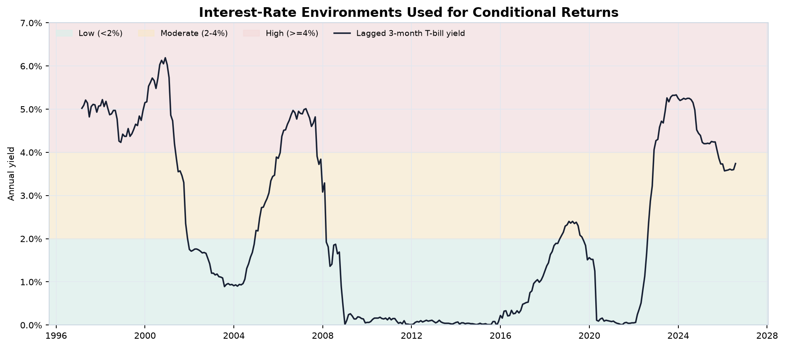
Interest-Rate Level Performance
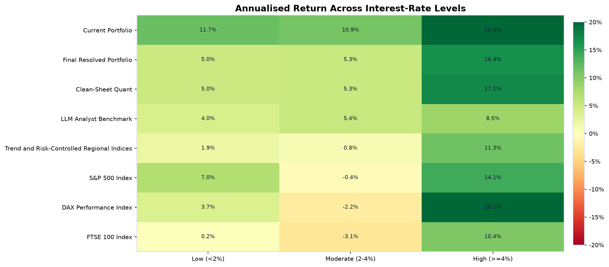
| Environment | Portfolio or index | Months | Conditional annual return | Volatility | sharpe | Conditional max drawdown | Worst month |
|---|---|---|---|---|---|---|---|
| High (>=4%) | Clean-Sheet Quant | 105 | 17.06% | 8.81% | 1.30 | -4.97% | -0.050 |
| High (>=4%) | Current Portfolio | 105 | 20.29% | 14.14% | 1.05 | -13.18% | -0.099 |
| High (>=4%) | DAX Performance Index | 105 | 20.05% | 19.16% | 0.81 | -30.45% | -0.157 |
| High (>=4%) | Dow Jones Industrial Average | 105 | 12.24% | 14.69% | 0.54 | -16.82% | -0.151 |
| High (>=4%) | FTSE 100 Index | 105 | 10.39% | 13.22% | 0.45 | -28.49% | -0.093 |
| High (>=4%) | Final Resolved Portfolio | 105 | 16.44% | 8.81% | 1.23 | -8.84% | -0.070 |
| High (>=4%) | LLM Analyst Benchmark | 105 | 8.52% | 3.36% | 1.03 | -2.94% | -0.025 |
| High (>=4%) | S&P 500 Index | 105 | 14.06% | 14.87% | 0.64 | -23.55% | -0.146 |
| High (>=4%) | Trend and Risk-Controlled Regional Indices | 105 | 11.26% | 8.54% | 0.74 | -13.80% | -0.130 |
| Low (<2%) | Clean-Sheet Quant | 198 | 5.02% | 11.63% | 0.43 | -32.33% | -0.127 |
| Low (<2%) | Current Portfolio | 198 | 11.69% | 17.62% | 0.68 | -41.16% | -0.170 |
| Low (<2%) | DAX Performance Index | 198 | 3.66% | 24.69% | 0.25 | -55.93% | -0.249 |
| Low (<2%) | Dow Jones Industrial Average | 198 | 6.21% | 15.05% | 0.44 | -44.99% | -0.141 |
| Low (<2%) | FTSE 100 Index | 198 | 0.16% | 17.85% | 0.07 | -54.74% | -0.189 |
| Low (<2%) | Final Resolved Portfolio | 198 | 5.04% | 12.43% | 0.41 | -32.34% | -0.131 |
| Low (<2%) | LLM Analyst Benchmark | 198 | 3.99% | 5.91% | 0.59 | -13.29% | -0.054 |
| Low (<2%) | S&P 500 Index | 198 | 7.01% | 15.65% | 0.48 | -47.51% | -0.169 |
| Low (<2%) | Trend and Risk-Controlled Regional Indices | 198 | 1.89% | 7.78% | 0.21 | -21.14% | -0.083 |
| Moderate (2-4%) | Clean-Sheet Quant | 51 | 5.29% | 10.84% | 0.25 | -10.13% | -0.060 |
| Moderate (2-4%) | Current Portfolio | 51 | 10.89% | 17.74% | 0.50 | -20.42% | -0.135 |
| Moderate (2-4%) | DAX Performance Index | 51 | -2.23% | 21.11% | -0.14 | -32.48% | -0.169 |
| Moderate (2-4%) | Dow Jones Industrial Average | 51 | 0.88% | 15.93% | -0.06 | -20.77% | -0.111 |
| Moderate (2-4%) | FTSE 100 Index | 51 | -3.06% | 15.01% | -0.33 | -35.31% | -0.095 |
| Moderate (2-4%) | Final Resolved Portfolio | 51 | 5.30% | 11.06% | 0.25 | -13.59% | -0.072 |
| Moderate (2-4%) | LLM Analyst Benchmark | 51 | 5.44% | 5.97% | 0.42 | -4.49% | -0.031 |
| Moderate (2-4%) | S&P 500 Index | 51 | -0.36% | 15.35% | -0.14 | -23.13% | -0.093 |
| Moderate (2-4%) | Trend and Risk-Controlled Regional Indices | 51 | 0.82% | 11.10% | -0.14 | -22.32% | -0.105 |
This table groups non-contiguous months by the lagged 3-month Treasury-bill yield level and annualizes the observations in each group. It is a conditional description, not a continuous investable path or a causal estimate. For Final Resolved Portfolio, the strongest group is High (>=4%), with a conditional geometric return of 16.44% across 105 months.
Interest-Rate Direction Performance
| Environment | Portfolio or index | Months | Conditional annual return | Volatility | sharpe | Conditional max drawdown | Worst month |
|---|---|---|---|---|---|---|---|
| Falling | Clean-Sheet Quant | 78 | 0.48% | 14.01% | -0.03 | -36.32% | -0.127 |
| Falling | Current Portfolio | 78 | 7.61% | 20.88% | 0.37 | -42.57% | -0.170 |
| Falling | DAX Performance Index | 78 | -3.92% | 30.32% | -0.04 | -73.09% | -0.249 |
| Falling | Dow Jones Industrial Average | 78 | -2.22% | 20.19% | -0.10 | -58.19% | -0.141 |
| Falling | FTSE 100 Index | 78 | -8.48% | 21.39% | -0.39 | -68.40% | -0.189 |
| Falling | Final Resolved Portfolio | 78 | 0.89% | 14.01% | -0.00 | -40.50% | -0.131 |
| Falling | LLM Analyst Benchmark | 78 | 7.39% | 6.77% | 0.81 | -13.29% | -0.054 |
| Falling | S&P 500 Index | 78 | -2.40% | 20.26% | -0.11 | -64.25% | -0.169 |
| Falling | Trend and Risk-Controlled Regional Indices | 78 | 1.56% | 9.38% | 0.01 | -26.93% | -0.105 |
| Rising | Clean-Sheet Quant | 79 | 13.70% | 10.72% | 0.92 | -14.08% | -0.055 |
| Rising | Current Portfolio | 79 | 15.36% | 15.44% | 0.77 | -14.51% | -0.091 |
| Rising | DAX Performance Index | 79 | 7.38% | 18.26% | 0.28 | -37.01% | -0.133 |
| Rising | Dow Jones Industrial Average | 79 | 7.25% | 14.15% | 0.30 | -14.64% | -0.088 |
| Rising | FTSE 100 Index | 79 | 2.23% | 14.61% | -0.03 | -28.15% | -0.095 |
| Rising | Final Resolved Portfolio | 79 | 13.25% | 11.42% | 0.83 | -16.83% | -0.070 |
| Rising | LLM Analyst Benchmark | 79 | 6.65% | 4.85% | 0.60 | -7.55% | -0.030 |
| Rising | S&P 500 Index | 79 | 6.46% | 14.20% | 0.25 | -15.59% | -0.093 |
| Rising | Trend and Risk-Controlled Regional Indices | 79 | 6.40% | 7.62% | 0.37 | -14.78% | -0.060 |
| Stable | Clean-Sheet Quant | 185 | 9.30% | 9.44% | 0.84 | -16.68% | -0.072 |
| Stable | Current Portfolio | 185 | 15.88% | 15.67% | 0.93 | -20.32% | -0.135 |
| Stable | DAX Performance Index | 185 | 11.27% | 21.18% | 0.54 | -33.56% | -0.191 |
| Stable | Dow Jones Industrial Average | 185 | 10.78% | 12.60% | 0.76 | -16.82% | -0.151 |
| Stable | FTSE 100 Index | 185 | 6.20% | 14.35% | 0.39 | -26.60% | -0.120 |
| Stable | Final Resolved Portfolio | 185 | 9.34% | 10.28% | 0.78 | -16.95% | -0.079 |
| Stable | LLM Analyst Benchmark | 185 | 4.32% | 4.96% | 0.59 | -9.21% | -0.049 |
| Stable | S&P 500 Index | 185 | 12.23% | 13.32% | 0.83 | -17.03% | -0.146 |
| Stable | Trend and Risk-Controlled Regional Indices | 185 | 4.79% | 8.97% | 0.41 | -21.14% | -0.130 |
This table groups non-contiguous months by the prior 12-month change in the Treasury-bill yield and annualizes the observations in each group. It is a conditional description, not a continuous investable path or a causal estimate. For Final Resolved Portfolio, the strongest group is Rising, with a conditional geometric return of 13.25% across 79 months.
Lagged Market Regime Performance
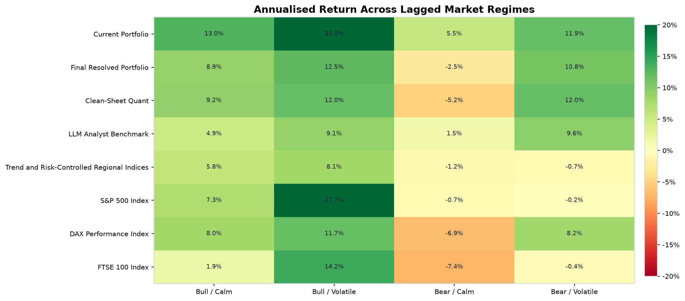
| Environment | Portfolio or index | Months | Conditional annual return | Volatility | sharpe | Conditional max drawdown | Worst month |
|---|---|---|---|---|---|---|---|
| Bear / Calm | Clean-Sheet Quant | 37 | -5.16% | 12.93% | -0.46 | -25.87% | -0.088 |
| Bear / Calm | Current Portfolio | 37 | 5.52% | 19.92% | 0.29 | -31.26% | -0.117 |
| Bear / Calm | DAX Performance Index | 37 | -6.86% | 30.49% | -0.13 | -43.42% | -0.249 |
| Bear / Calm | Dow Jones Industrial Average | 37 | 2.66% | 19.16% | 0.15 | -28.86% | -0.124 |
| Bear / Calm | FTSE 100 Index | 37 | -7.36% | 20.01% | -0.36 | -37.14% | -0.149 |
| Bear / Calm | Final Resolved Portfolio | 37 | -2.52% | 13.09% | -0.24 | -21.67% | -0.079 |
| Bear / Calm | LLM Analyst Benchmark | 37 | 1.48% | 6.79% | 0.03 | -8.29% | -0.049 |
| Bear / Calm | S&P 500 Index | 37 | -0.66% | 19.82% | -0.01 | -33.63% | -0.110 |
| Bear / Calm | Trend and Risk-Controlled Regional Indices | 37 | -1.15% | 7.38% | -0.32 | -10.36% | -0.083 |
| Bear / Volatile | Clean-Sheet Quant | 43 | 12.02% | 14.22% | 0.74 | -16.72% | -0.127 |
| Bear / Volatile | Current Portfolio | 43 | 11.95% | 23.90% | 0.51 | -32.92% | -0.170 |
| Bear / Volatile | DAX Performance Index | 43 | 8.22% | 34.18% | 0.35 | -54.12% | -0.230 |
| Bear / Volatile | Dow Jones Industrial Average | 43 | 2.21% | 21.32% | 0.12 | -41.77% | -0.141 |
| Bear / Volatile | FTSE 100 Index | 43 | -0.45% | 22.73% | 0.01 | -48.85% | -0.189 |
| Bear / Volatile | Final Resolved Portfolio | 43 | 10.81% | 15.56% | 0.62 | -22.51% | -0.131 |
| Bear / Volatile | LLM Analyst Benchmark | 43 | 9.63% | 6.12% | 1.24 | -5.55% | -0.054 |
| Bear / Volatile | S&P 500 Index | 43 | -0.22% | 22.29% | 0.02 | -48.15% | -0.169 |
| Bear / Volatile | Trend and Risk-Controlled Regional Indices | 43 | -0.68% | 4.82% | -0.50 | -7.60% | -0.052 |
| Bull / Calm | Clean-Sheet Quant | 226 | 9.24% | 9.97% | 0.72 | -27.31% | -0.096 |
| Bull / Calm | Current Portfolio | 226 | 13.05% | 14.73% | 0.76 | -26.80% | -0.135 |
| Bull / Calm | DAX Performance Index | 226 | 8.05% | 18.98% | 0.39 | -49.34% | -0.191 |
| Bull / Calm | Dow Jones Industrial Average | 226 | 5.86% | 12.95% | 0.33 | -27.35% | -0.151 |
| Bull / Calm | FTSE 100 Index | 226 | 1.88% | 14.35% | 0.05 | -55.38% | -0.160 |
| Bull / Calm | Final Resolved Portfolio | 226 | 8.94% | 10.37% | 0.67 | -29.82% | -0.083 |
| Bull / Calm | LLM Analyst Benchmark | 226 | 4.90% | 4.80% | 0.57 | -10.95% | -0.034 |
| Bull / Calm | S&P 500 Index | 226 | 7.30% | 12.96% | 0.44 | -27.31% | -0.146 |
| Bull / Calm | Trend and Risk-Controlled Regional Indices | 226 | 5.78% | 9.78% | 0.40 | -27.71% | -0.130 |
| Bull / Volatile | Clean-Sheet Quant | 36 | 11.98% | 9.96% | 0.98 | -4.56% | -0.046 |
| Bull / Volatile | Current Portfolio | 36 | 30.99% | 16.64% | 1.59 | -7.91% | -0.073 |
| Bull / Volatile | DAX Performance Index | 36 | 11.74% | 21.28% | 0.53 | -17.16% | -0.103 |
| Bull / Volatile | Dow Jones Industrial Average | 36 | 24.63% | 13.06% | 1.60 | -6.78% | -0.067 |
| Bull / Volatile | FTSE 100 Index | 36 | 14.19% | 14.68% | 0.84 | -9.34% | -0.065 |
| Bull / Volatile | Final Resolved Portfolio | 36 | 12.48% | 11.00% | 0.94 | -8.11% | -0.057 |
| Bull / Volatile | LLM Analyst Benchmark | 36 | 9.14% | 6.27% | 1.09 | -3.50% | -0.030 |
| Bull / Volatile | S&P 500 Index | 36 | 27.74% | 13.87% | 1.70 | -8.26% | -0.066 |
| Bull / Volatile | Trend and Risk-Controlled Regional Indices | 36 | 8.10% | 6.43% | 0.93 | -4.57% | -0.030 |
This table groups non-contiguous months by lagged S&P 500 momentum and volatility and annualizes the observations in each group. It is a conditional description, not a continuous investable path or a causal estimate. For Final Resolved Portfolio, the strongest group is Bull / Volatile, with a conditional geometric return of 12.48% across 36 months.
Retrospective Economic-Cycle Performance
| Environment | Portfolio or index | Months | Conditional annual return | Volatility | sharpe | Conditional max drawdown | Worst month |
|---|---|---|---|---|---|---|---|
| Expansion | Clean-Sheet Quant | 326 | 9.74% | 10.20% | 0.75 | -17.28% | -0.096 |
| Expansion | Current Portfolio | 326 | 15.57% | 15.66% | 0.86 | -28.91% | -0.135 |
| Expansion | DAX Performance Index | 326 | 9.33% | 21.25% | 0.42 | -56.23% | -0.249 |
| Expansion | Dow Jones Industrial Average | 326 | 8.78% | 14.15% | 0.51 | -29.27% | -0.151 |
| Expansion | FTSE 100 Index | 326 | 4.66% | 15.18% | 0.23 | -42.58% | -0.160 |
| Expansion | Final Resolved Portfolio | 326 | 9.44% | 10.80% | 0.69 | -20.40% | -0.083 |
| Expansion | LLM Analyst Benchmark | 326 | 5.50% | 5.02% | 0.65 | -9.21% | -0.049 |
| Expansion | S&P 500 Index | 326 | 9.67% | 14.35% | 0.56 | -41.54% | -0.146 |
| Expansion | Trend and Risk-Controlled Regional Indices | 326 | 4.91% | 8.75% | 0.34 | -23.29% | -0.130 |
| Recession | Clean-Sheet Quant | 28 | -5.00% | 16.18% | -0.32 | -35.18% | -0.127 |
| Recession | Current Portfolio | 28 | -2.18% | 25.69% | -0.01 | -41.89% | -0.170 |
| Recession | DAX Performance Index | 28 | -13.09% | 35.82% | -0.25 | -60.81% | -0.230 |
| Recession | Dow Jones Industrial Average | 28 | -9.91% | 23.11% | -0.39 | -48.72% | -0.141 |
| Recession | FTSE 100 Index | 28 | -18.51% | 24.96% | -0.74 | -58.45% | -0.189 |
| Recession | Final Resolved Portfolio | 28 | -3.69% | 16.14% | -0.23 | -33.89% | -0.131 |
| Recession | LLM Analyst Benchmark | 28 | 5.81% | 8.02% | 0.57 | -13.29% | -0.054 |
| Recession | S&P 500 Index | 28 | -10.34% | 24.24% | -0.38 | -51.25% | -0.169 |
| Recession | Trend and Risk-Controlled Regional Indices | 28 | -1.02% | 6.72% | -0.31 | -8.70% | -0.057 |
This table groups non-contiguous months by the retrospective NBER recession indicator and annualizes the observations in each group. It is a conditional description, not a continuous investable path or a causal estimate. For Final Resolved Portfolio, the strongest group is Expansion, with a conditional geometric return of 9.44% across 326 months.
Major Macro Events
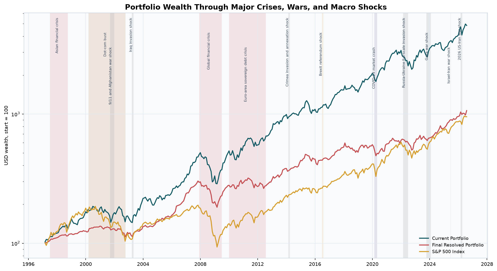
Shading includes the Asian crisis, dot-com bust, global financial crisis, COVID-19, political shocks, and war windows through the 2026 US-Iran conflict.
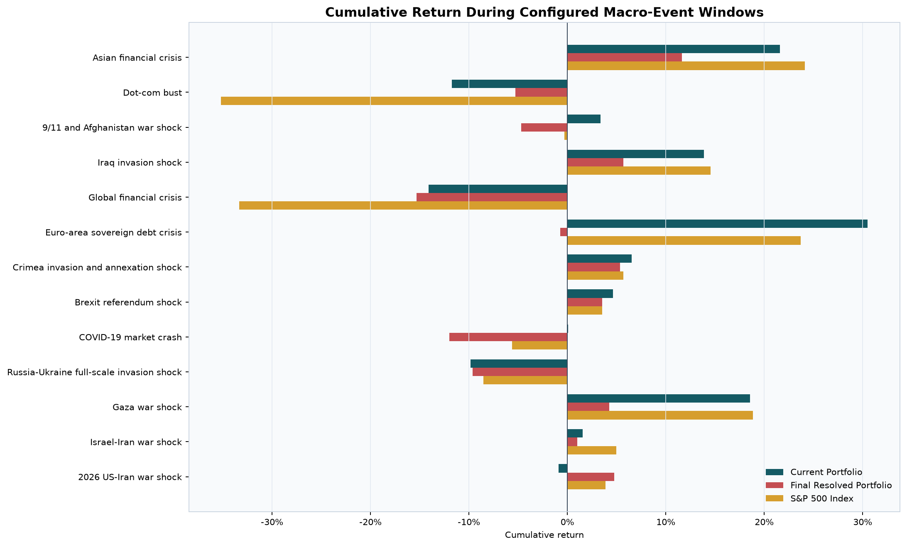
Configured Event Windows
| Event window | Type | Start | End | Days |
|---|---|---|---|---|
| Asian financial crisis | financial_crisis | 1997-07-02 00:00:00 | 1998-09-30 00:00:00 | 456 |
| Dot-com bust | market_crash | 2000-03-10 00:00:00 | 2002-10-09 00:00:00 | 944 |
| 9/11 and Afghanistan war shock | war | 2001-09-11 00:00:00 | 2001-12-31 00:00:00 | 112 |
| Iraq invasion shock | war | 2003-03-20 00:00:00 | 2003-05-01 00:00:00 | 43 |
| Global financial crisis | financial_crisis | 2007-12-01 00:00:00 | 2009-06-30 00:00:00 | 578 |
| Euro-area sovereign debt crisis | financial_crisis | 2010-01-01 00:00:00 | 2012-07-26 00:00:00 | 938 |
| Crimea invasion and annexation shock | war | 2014-02-20 00:00:00 | 2014-03-31 00:00:00 | 40 |
| Brexit referendum shock | political_shock | 2016-06-23 00:00:00 | 2016-07-31 00:00:00 | 39 |
| COVID-19 market crash | pandemic | 2020-02-19 00:00:00 | 2020-04-30 00:00:00 | 72 |
| Russia-Ukraine full-scale invasion shock | war | 2022-02-24 00:00:00 | 2022-06-30 00:00:00 | 127 |
| Gaza war shock | war | 2023-10-07 00:00:00 | 2024-01-31 00:00:00 | 117 |
| Israel-Iran war shock | war | 2025-06-13 00:00:00 | 2025-06-24 00:00:00 | 12 |
| 2026 US-Iran war shock | war | 2026-02-28 00:00:00 | 2026-04-08 00:00:00 | 40 |
The event-definition table supplies source-backed windows shaded on the charts. They are market-response intervals for monthly analysis, not claims about legal war dates, and overlapping events can share return months.
Portfolio and S&P 500 Event Performance
| Event window | Portfolio or index | Months | cumulative_return | Max drawdown | worst_month | Starting AUM | Event PnL |
|---|---|---|---|---|---|---|---|
| Asian financial crisis | Current Portfolio | 16 | 21.58% | -7.31% | -0.073 | $208,623,088 | $45,021,599 |
| Asian financial crisis | Final Resolved Portfolio | 16 | 11.64% | -2.48% | -0.025 | $195,423,521 | $22,741,363 |
| Asian financial crisis | S&P 500 Index | 16 | 24.12% | -15.57% | -0.146 | $112,590 | $27,161 |
| Dot-com bust | Current Portfolio | 32 | -11.74% | -24.68% | -0.107 | $340,136,071 | $-39,939,207 |
| Dot-com bust | Final Resolved Portfolio | 32 | -5.29% | -17.59% | -0.066 | $228,947,233 | $-12,112,391 |
| Dot-com bust | S&P 500 Index | 32 | -35.18% | -46.28% | -0.110 | $173,809 | $-61,140 |
| 9/11 and Afghanistan war shock | Current Portfolio | 5 | 3.37% | -10.69% | -0.107 | $302,973,487 | $10,203,096 |
| 9/11 and Afghanistan war shock | Final Resolved Portfolio | 5 | -4.71% | -4.71% | -0.039 | $245,405,797 | $-11,555,094 |
| 9/11 and Afghanistan war shock | S&P 500 Index | 5 | -0.30% | -8.17% | -0.082 | $144,192 | $-430 |
| Iraq invasion shock | Current Portfolio | 3 | 13.87% | -1.14% | -0.011 | $271,993,633 | $37,735,093 |
| Iraq invasion shock | Final Resolved Portfolio | 3 | 5.67% | -2.38% | -0.024 | $214,592,509 | $12,174,247 |
| Iraq invasion shock | S&P 500 Index | 3 | 14.56% | 0.00% | 0.008 | $106,995 | $15,574 |
| Global financial crisis | Current Portfolio | 20 | -14.12% | -42.57% | -0.170 | $904,465,414 | $-127,694,080 |
| Global financial crisis | Final Resolved Portfolio | 20 | -15.31% | -36.41% | -0.131 | $551,030,427 | $-84,388,160 |
| Global financial crisis | S&P 500 Index | 20 | -33.33% | -50.37% | -0.169 | $188,402 | $-62,794 |
| Euro-area sovereign debt crisis | Current Portfolio | 31 | 30.51% | -15.02% | -0.082 | $964,074,574 | $294,138,255 |
| Euro-area sovereign debt crisis | Final Resolved Portfolio | 31 | -0.71% | -16.95% | -0.066 | $522,939,974 | $-3,711,369 |
| Euro-area sovereign debt crisis | S&P 500 Index | 31 | 23.69% | -17.03% | -0.082 | $141,841 | $33,609 |
| Crimea invasion and annexation shock | Current Portfolio | 3 | 6.52% | 0.00% | 0.014 | $1,714,709,632 | $111,832,759 |
| Crimea invasion and annexation shock | Final Resolved Portfolio | 3 | 5.36% | 0.00% | 0.013 | $670,396,335 | $35,906,038 |
| Crimea invasion and annexation shock | S&P 500 Index | 3 | 5.69% | 0.00% | 0.006 | $226,746 | $12,893 |
| Brexit referendum shock | Current Portfolio | 3 | 4.61% | -0.26% | -0.003 | $2,089,451,021 | $96,398,186 |
| Brexit referendum shock | Final Resolved Portfolio | 3 | 3.52% | -0.40% | -0.004 | $818,966,854 | $28,824,198 |
| Brexit referendum shock | S&P 500 Index | 3 | 3.53% | -0.12% | -0.001 | $266,733 | $9,413 |
| COVID-19 market crash | Current Portfolio | 4 | 0.09% | -11.36% | -0.076 | $3,743,959,057 | $3,485,842 |
| COVID-19 market crash | Final Resolved Portfolio | 4 | -12.01% | -15.04% | -0.083 | $1,040,535,607 | $-124,954,845 |
| COVID-19 market crash | S&P 500 Index | 4 | -5.62% | -19.87% | -0.125 | $410,288 | $-23,050 |
| Russia-Ukraine full-scale invasion shock | Current Portfolio | 6 | -9.82% | -16.45% | -0.091 | $5,251,173,425 | $-515,651,246 |
| Russia-Ukraine full-scale invasion shock | Final Resolved Portfolio | 6 | -9.61% | -9.61% | -0.036 | $1,189,642,420 | $-114,336,293 |
| Russia-Ukraine full-scale invasion shock | S&P 500 Index | 6 | -8.53% | -16.45% | -0.088 | $574,381 | $-49,005 |
| Gaza war shock | Current Portfolio | 5 | 18.54% | -3.13% | -0.031 | $5,299,621,300 | $982,632,488 |
| Gaza war shock | Final Resolved Portfolio | 5 | 4.23% | -2.37% | -0.024 | $1,187,602,775 | $50,229,930 |
| Gaza war shock | S&P 500 Index | 5 | 18.85% | -2.20% | -0.022 | $545,442 | $102,806 |
| Israel-Iran war shock | Current Portfolio | 1 | 1.54% | 0.00% | 0.015 | $6,789,718,395 | $104,830,801 |
| Israel-Iran war shock | Final Resolved Portfolio | 1 | 0.99% | 0.00% | 0.010 | $1,666,217,603 | $16,445,233 |
| Israel-Iran war shock | S&P 500 Index | 1 | 4.96% | 0.00% | 0.050 | $751,970 | $37,303 |
| 2026 US-Iran war shock | Current Portfolio | 3 | -0.92% | -13.50% | -0.135 | $8,391,559,287 | $-76,807,614 |
| 2026 US-Iran war shock | Final Resolved Portfolio | 3 | 4.78% | -4.27% | -0.043 | $1,801,956,971 | $86,072,281 |
| 2026 US-Iran war shock | S&P 500 Index | 3 | 3.89% | -5.92% | -0.051 | $882,649 | $34,342 |
Event return compounds all overlapping monthly observations, event drawdown measures the loss within that window, and event PnL applies the return to actual simulated AUM at the start of the window. The weakest configured event for the final portfolio is Global financial crisis, returning -15.31% with a -36.41% within-window drawdown.
The Three Backtests
Monthly execution with one-period signal lag for the index challenger. Current portfolio outputs are shown only as retrospective holdings replays and are explicitly flagged for selection look-ahead and survivorship bias.
Circular 12-month moving blocks preserve serial dependence and cross-strategy alignment. The intervals show how path order changes CAGR, Sharpe, drawdown, and benchmark outperformance.
A correlated Student-t AR(1) process with EWMA conditional variance preserves cross-portfolio dependence, autocorrelation, fat tails, and volatility clustering without fitting a return target.
PSR, MinTRL, Sidak family-wise control, and Deflated Sharpe Ratios account for sample length, non-normal returns, and the number and correlation of portfolio trials.
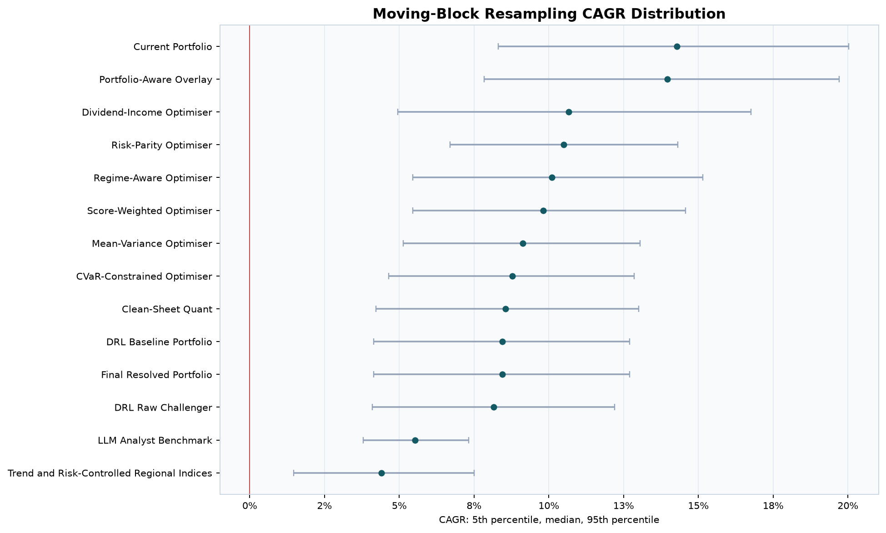
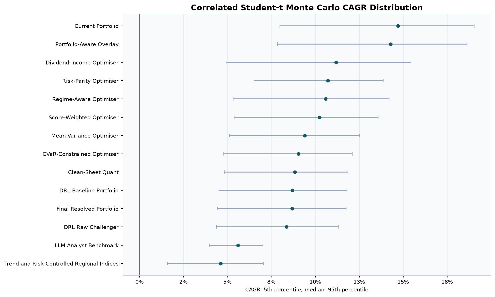
Moving-Block Resampling Summary
| Portfolio | cagr_p05 | cagr_median | cagr_p95 | Drawdown 5th percentile | Loss probability | Regional outperformance |
|---|---|---|---|---|---|---|
| current_portfolio | 8.31% | 14.27% | 20.02% | -57.20% | 0.00% | 100.00% |
| portfolio_aware_overlay | 7.83% | 13.96% | 19.70% | -60.02% | 0.02% | 100.00% |
| optimised_dividend_income | 4.94% | 10.67% | 16.76% | -59.45% | 0.18% | 99.80% |
| optimised_risk_parity | 6.70% | 10.49% | 14.31% | -41.19% | 0.00% | 96.00% |
| optimised_regime_aware | 5.45% | 10.11% | 15.15% | -51.63% | 0.02% | 99.54% |
| optimised_score_weighted | 5.44% | 9.81% | 14.57% | -46.43% | 0.00% | 98.26% |
| optimised_mean_variance | 5.13% | 9.13% | 13.04% | -48.03% | 0.02% | 94.26% |
| optimised_cvar_constrained | 4.65% | 8.78% | 12.85% | -48.33% | 0.08% | 94.66% |
| clean_sheet | 4.22% | 8.56% | 13.00% | -48.13% | 0.06% | 99.16% |
| drl_baseline | 4.15% | 8.45% | 12.70% | -49.10% | 0.10% | 94.08% |
| final_portfolio | 4.15% | 8.45% | 12.70% | -49.10% | 0.10% | 94.08% |
| drl_challenger_raw | 4.09% | 8.16% | 12.20% | -47.29% | 0.08% | 93.64% |
| llm_benchmark | 3.80% | 5.53% | 7.32% | -17.05% | 0.00% | 98.96% |
| trend_risk_controlled_indices | 1.46% | 4.40% | 7.50% | -40.49% | 0.64% | 27.04% |
The moving-block bootstrap rearranges 12-month blocks while preserving short-run dependence and cross-strategy alignment. Its 5th, median, and 95th percentiles show sensitivity to historical path order. The lowest 5th-percentile CAGR is trend_risk_controlled_indices at 1.46%.
Monte Carlo Summary
| Portfolio | cagr_p05 | cagr_median | cagr_p95 | Drawdown 5th percentile | Ending value 5th percentile | Median ending value | Ending value 95th percentile | Loss probability |
|---|---|---|---|---|---|---|---|---|
| current_portfolio | 7.99% | 14.71% | 19.04% | -74.18% | $1,795,405,251 | $10,651,681,541 | $31,778,952,779 | 0.92% |
| portfolio_aware_overlay | 7.84% | 14.29% | 18.63% | -71.43% | $1,725,294,089 | $9,568,813,085 | $28,703,239,109 | 0.90% |
| optimised_dividend_income | 4.92% | 11.18% | 15.45% | -76.02% | $412,597 | $2,279,710 | $6,922,512 | 1.60% |
| optimised_risk_parity | 6.51% | 10.72% | 13.87% | -58.17% | $643,378 | $2,015,400 | $4,613,955 | 0.54% |
| optimised_regime_aware | 5.33% | 10.59% | 14.20% | -68.25% | $463,075 | $1,947,489 | $5,023,568 | 1.08% |
| optimised_score_weighted | 5.38% | 10.25% | 13.57% | -65.55% | $469,340 | $1,776,676 | $4,272,036 | 0.98% |
| optimised_mean_variance | 5.11% | 9.40% | 12.52% | -61.53% | $435,594 | $1,416,859 | $3,242,269 | 0.88% |
| optimised_cvar_constrained | 4.77% | 9.04% | 12.10% | -61.39% | $395,059 | $1,284,077 | $2,906,135 | 0.80% |
| clean_sheet | 4.82% | 8.83% | 11.85% | -58.24% | $401,048 | $1,215,083 | $2,722,622 | 0.70% |
| drl_baseline | 4.51% | 8.69% | 11.79% | -61.68% | $683,655,569 | $2,176,299,559 | $4,986,315,165 | 0.76% |
| final_portfolio | 4.45% | 8.68% | 11.75% | -61.69% | $672,222,890 | $2,169,573,669 | $4,931,275,600 | 0.80% |
| drl_challenger_raw | 4.38% | 8.36% | 11.31% | -58.06% | $658,662,304 | $1,989,721,257 | $4,393,785,604 | 0.76% |
| llm_benchmark | 3.97% | 5.60% | 7.02% | -28.07% | $314,940 | $498,955 | $739,575 | 0.18% |
| trend_risk_controlled_indices | 1.58% | 4.61% | 7.05% | -56.02% | $158,885 | $378,022 | $746,199 | 1.62% |
Monte Carlo uses correlated Student-t shocks, AR(1) persistence, and EWMA volatility to create fat-tailed, volatility-clustered paths. It is a modeled stress distribution, not a forecast promise. The lowest simulated 5th-percentile CAGR is trend_risk_controlled_indices at 1.58%.
Untouched Embargo Comparison
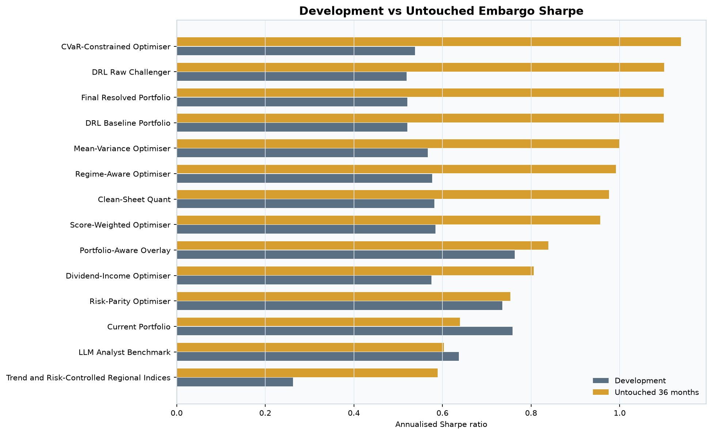
| Portfolio | Sample | Months | cagr | Volatility | sharpe | Max drawdown |
|---|---|---|---|---|---|---|
| clean_sheet | development | 318 | 8.01% | 11.06% | 0.58 | -36.03% |
| clean_sheet | untouched_embargo | 36 | 12.86% | 8.34% | 0.98 | -4.10% |
| current_portfolio | development | 318 | 13.94% | 16.58% | 0.76 | -42.57% |
| current_portfolio | untouched_embargo | 36 | 15.09% | 17.65% | 0.64 | -13.50% |
| drl_baseline | development | 318 | 7.46% | 11.41% | 0.52 | -37.34% |
| drl_baseline | untouched_embargo | 36 | 16.46% | 10.42% | 1.10 | -7.35% |
| drl_challenger_raw | development | 318 | 7.19% | 10.86% | 0.52 | -35.80% |
| drl_challenger_raw | untouched_embargo | 36 | 15.91% | 9.95% | 1.10 | -6.92% |
| final_portfolio | development | 318 | 7.46% | 11.41% | 0.52 | -37.34% |
| final_portfolio | untouched_embargo | 36 | 16.46% | 10.42% | 1.10 | -7.35% |
| llm_benchmark | development | 318 | 5.30% | 5.35% | 0.64 | -13.29% |
| llm_benchmark | untouched_embargo | 36 | 7.48% | 4.96% | 0.60 | -3.92% |
| optimised_cvar_constrained | development | 318 | 7.78% | 11.66% | 0.54 | -37.09% |
| optimised_cvar_constrained | untouched_embargo | 36 | 17.07% | 10.55% | 1.14 | -7.47% |
| optimised_dividend_income | development | 318 | 10.15% | 15.65% | 0.58 | -45.88% |
| optimised_dividend_income | untouched_embargo | 36 | 14.63% | 12.53% | 0.81 | -9.46% |
| optimised_mean_variance | development | 318 | 8.32% | 12.02% | 0.57 | -37.88% |
| optimised_mean_variance | untouched_embargo | 36 | 15.41% | 10.57% | 1.00 | -7.99% |
| optimised_regime_aware | development | 318 | 9.42% | 14.03% | 0.58 | -39.50% |
| optimised_regime_aware | untouched_embargo | 36 | 16.40% | 11.65% | 0.99 | -8.36% |
| optimised_risk_parity | development | 318 | 10.11% | 11.42% | 0.74 | -29.10% |
| optimised_risk_parity | untouched_embargo | 36 | 13.16% | 11.57% | 0.75 | -8.19% |
| optimised_score_weighted | development | 318 | 9.14% | 13.20% | 0.58 | -33.64% |
| optimised_score_weighted | untouched_embargo | 36 | 15.95% | 11.66% | 0.96 | -8.43% |
| portfolio_aware_overlay | development | 318 | 13.36% | 15.60% | 0.76 | -47.39% |
| portfolio_aware_overlay | untouched_embargo | 36 | 16.64% | 14.45% | 0.84 | -12.09% |
| trend_risk_controlled_indices | development | 318 | 3.87% | 8.61% | 0.26 | -23.30% |
| trend_risk_controlled_indices | untouched_embargo | 36 | 9.48% | 8.63% | 0.59 | -8.26% |
The embargo table compares the development sample with the final untouched 36 months. A sharp fall in Sharpe or return signals instability; agreement is encouraging but cannot cure retrospective selection bias.
Statistical Significance and Multiple Testing
| Portfolio | annualised_sharpe | PSR | MinTRL months | sidak_significant | DSR | cluster_adjusted_deflated_sharpe_ratio |
|---|---|---|---|---|---|---|
| portfolio_aware_overlay | 0.77 | 100.00% | 62.567 | True | 99.84% | 99.96% |
| current_portfolio | 0.75 | 99.99% | 64.858 | True | 99.79% | 99.94% |
| optimised_risk_parity | 0.74 | 99.99% | 66.349 | True | 99.75% | 99.93% |
| llm_benchmark | 0.63 | 99.97% | 83.645 | True | 99.07% | 99.72% |
| optimised_score_weighted | 0.62 | 99.96% | 86.104 | True | 98.90% | 99.66% |
| optimised_regime_aware | 0.61 | 99.96% | 86.611 | True | 98.85% | 99.65% |
| clean_sheet | 0.61 | 99.94% | 92.123 | True | 98.62% | 99.55% |
| optimised_mean_variance | 0.61 | 99.93% | 94.177 | True | 98.50% | 99.50% |
| optimised_dividend_income | 0.59 | 99.92% | 96.175 | True | 98.33% | 99.44% |
| optimised_cvar_constrained | 0.59 | 99.91% | 98.518 | True | 98.22% | 99.39% |
| final_portfolio | 0.58 | 99.88% | 104.048 | True | 97.78% | 99.22% |
| drl_baseline | 0.58 | 99.88% | 104.048 | True | 97.78% | 99.22% |
| drl_challenger_raw | 0.57 | 99.88% | 104.519 | True | 97.75% | 99.21% |
| trend_risk_controlled_indices | 0.30 | 93.87% | 401.646 | False | 70.10% | 82.35% |
PSR and MinTRL evaluate reliability, Sidak controls family-wise error across tested strategies, and DSR penalizes multiple trials and non-normal returns. 13 of 14 results clear Sidak; significance does not remove retrospective selection look-ahead.
Alpha and Strategy-Selection Overfitting
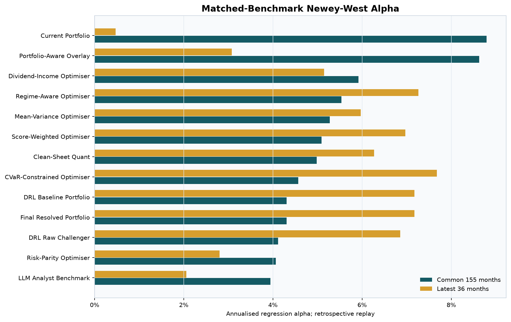
| observations | Raw trials | Unique trials | Global max-t p-value | CSCV PBO | Median selected IS IR | Median selected OOS IR | Selection IR haircut | Selection risk | Deployable alpha |
|---|---|---|---|---|---|---|---|---|---|
| 144 | 13 | 12 | 0.0002 | 24.57% | 1.37 | 0.71 | 48.37% | LOW | NOT_ESTABLISHED |
| Portfolio | annualised_active_return | information_ratio | Max-t p-value | FWER significant | Selected in CSCV | Duplicate path |
|---|---|---|---|---|---|---|
| Portfolio-Aware Overlay | 7.97% | 1.14 | 0.0002 | True | 49.57% | |
| LLM Analyst Benchmark | 3.83% | 0.99 | 0.0014 | True | 26.84% | |
| Current Portfolio | 8.11% | 0.89 | 0.0028 | True | 0.00% | |
| Dividend-Income Optimiser | 5.68% | 0.80 | 0.0068 | True | 17.42% | |
| Regime-Aware Optimiser | 5.00% | 0.66 | 0.0350 | True | 0.65% | |
| Clean-Sheet Quant | 4.32% | 0.62 | 0.0510 | False | 5.41% | |
| Score-Weighted Optimiser | 4.34% | 0.56 | 0.0876 | False | 0.00% | |
| Mean-Variance Optimiser | 4.07% | 0.49 | 0.1444 | False | 0.11% | |
| CVaR-Constrained Optimiser | 3.47% | 0.46 | 0.1842 | False | 0.00% | |
| DRL Raw Challenger | 2.98% | 0.42 | 0.2533 | False | 0.00% | |
| Final Resolved Portfolio | 3.10% | 0.41 | 0.2609 | False | 0.00% | |
| DRL Baseline Portfolio | 3.10% | 0.41 | 0.2609 | False | 0.00% | final_portfolio |
| Risk-Parity Optimiser | 2.38% | 0.32 | 0.4371 | False | 0.00% |
| Portfolio | Sample | observations | annualised_alpha | beta | NW t-stat | NW p-value | Evidence status |
|---|---|---|---|---|---|---|---|
| Current Portfolio | common_investable_window | 144 | 8.79% | 0.85 | 3.469 | 0.0005 | RETROSPECTIVE_ONLY |
| Portfolio-Aware Overlay | common_investable_window | 144 | 8.62% | 0.86 | 4.456 | 0.0000 | RETROSPECTIVE_ONLY |
| Dividend-Income Optimiser | common_investable_window | 144 | 5.92% | 0.93 | 3.233 | 0.0012 | RETROSPECTIVE_ONLY |
| Regime-Aware Optimiser | common_investable_window | 144 | 5.54% | 0.85 | 3.055 | 0.0022 | RETROSPECTIVE_ONLY |
| Mean-Variance Optimiser | common_investable_window | 144 | 5.28% | 0.73 | 2.817 | 0.0049 | RETROSPECTIVE_ONLY |
| Score-Weighted Optimiser | common_investable_window | 144 | 5.09% | 0.82 | 2.745 | 0.0060 | RETROSPECTIVE_ONLY |
| Clean-Sheet Quant | common_investable_window | 144 | 4.98% | 0.78 | 2.685 | 0.0073 | RETROSPECTIVE_ONLY |
| CVaR-Constrained Optimiser | common_investable_window | 144 | 4.57% | 0.73 | 3.079 | 0.0021 | RETROSPECTIVE_ONLY |
| DRL Baseline Portfolio | common_investable_window | 144 | 4.30% | 0.70 | 3.001 | 0.0027 | RETROSPECTIVE_ONLY |
| Final Resolved Portfolio | common_investable_window | 144 | 4.30% | 0.70 | 3.001 | 0.0027 | RETROSPECTIVE_ONLY |
| DRL Raw Challenger | common_investable_window | 144 | 4.11% | 0.70 | 3.006 | 0.0027 | RETROSPECTIVE_ONLY |
| Risk-Parity Optimiser | common_investable_window | 144 | 4.06% | 0.71 | 2.710 | 0.0067 | RETROSPECTIVE_ONLY |
| LLM Analyst Benchmark | common_investable_window | 144 | 3.94% | 0.87 | 4.619 | 0.0000 | RETROSPECTIVE_ONLY |
| CVaR-Constrained Optimiser | last_36_months | 36 | 7.68% | 0.55 | 2.602 | 0.0093 | RETROSPECTIVE_ONLY |
| Regime-Aware Optimiser | last_36_months | 36 | 7.26% | 0.60 | 2.284 | 0.0224 | RETROSPECTIVE_ONLY |
| Final Resolved Portfolio | last_36_months | 36 | 7.18% | 0.55 | 2.490 | 0.0128 | RETROSPECTIVE_ONLY |
| DRL Baseline Portfolio | last_36_months | 36 | 7.18% | 0.55 | 2.490 | 0.0128 | RETROSPECTIVE_ONLY |
| Score-Weighted Optimiser | last_36_months | 36 | 6.97% | 0.55 | 1.984 | 0.0473 | RETROSPECTIVE_ONLY |
| DRL Raw Challenger | last_36_months | 36 | 6.85% | 0.55 | 2.506 | 0.0122 | RETROSPECTIVE_ONLY |
| Clean-Sheet Quant | last_36_months | 36 | 6.27% | 0.38 | 1.862 | 0.0626 | RETROSPECTIVE_ONLY |
| Mean-Variance Optimiser | last_36_months | 36 | 5.97% | 0.57 | 1.967 | 0.0492 | RETROSPECTIVE_ONLY |
| Dividend-Income Optimiser | last_36_months | 36 | 5.15% | 0.69 | 1.771 | 0.0765 | RETROSPECTIVE_ONLY |
| Portfolio-Aware Overlay | last_36_months | 36 | 3.08% | 0.96 | 0.635 | 0.5256 | RETROSPECTIVE_ONLY |
| Risk-Parity Optimiser | last_36_months | 36 | 2.80% | 0.63 | 0.835 | 0.4039 | RETROSPECTIVE_ONLY |
| LLM Analyst Benchmark | last_36_months | 36 | 2.06% | 0.57 | 1.419 | 0.1558 | RETROSPECTIVE_ONLY |
| Current Portfolio | last_36_months | 36 | 0.47% | 1.06 | 0.077 | 0.9386 | RETROSPECTIVE_ONLY |
Newey-West regressions test alpha against each portfolio-specific regional index blend while allowing serial correlation. The block-bootstrap max-t test controls selection across the whole strategy family, and CSCV repeatedly selects in one half of the history and ranks that winner in the other half. 5 unique results clear the max-t family-wise test. CSCV estimates PBO at 24.57%, while the median selected information ratio falls from 1.37 in-sample to 0.71 out-of-sample. The largest measured common-window alpha is 8.79% for Current Portfolio. Every long portfolio path is still a retrospective holdings replay, so these tests measure path robustness, not deployable stock-selection alpha.
Data Quality and Causality
Execution and Liquidity
| Portfolio | Total modeled cost | Annual turnover | Max ADV participation | Constrained trade events | Max unfilled target |
|---|---|---|---|---|---|
| current_portfolio | $188,405,107 | 17.52% | 5.00% | 1645 | 27.56% |
| portfolio_aware_overlay | $182,605,169 | 19.54% | 5.00% | 1948 | 25.99% |
| drl_baseline | $69,020,473 | 22.20% | 5.00% | 1966 | 26.14% |
| final_portfolio | $69,020,473 | 22.20% | 5.00% | 1966 | 26.14% |
| drl_challenger_raw | $65,067,235 | 21.71% | 5.00% | 1870 | 24.64% |
| optimised_dividend_income | $56,732 | 32.02% | 2.95% | 0 | 0.00% |
| optimised_risk_parity | $54,018 | 27.12% | 5.00% | 4 | 4.57% |
| optimised_regime_aware | $49,477 | 29.65% | 5.00% | 13 | 2.66% |
| optimised_score_weighted | $45,295 | 28.92% | 5.00% | 9 | 0.48% |
| optimised_mean_variance | $37,541 | 29.11% | 5.00% | 3 | 2.66% |
| optimised_cvar_constrained | $35,160 | 28.36% | 5.00% | 4 | 2.66% |
| clean_sheet | $33,761 | 25.89% | 5.00% | 9 | 4.04% |
| trend_risk_controlled_indices | $28,265 | 126.60% | 0 | 0.00% | |
| llm_benchmark | $18,557 | 14.32% | 0.83% | 0 | 0.00% |
Execution rows show dollar costs, turnover, peak ADV participation, constrained trades, and unfilled weight. Large current-derived AUM can leave low-liquidity targets partly in cash, making these results capacity-aware.
Adjusted-Price Repairs
| symbol | Event date | Auditable repair | Raw return | Post-repair return | Scale factor |
|---|---|---|---|---|---|
| 600018.SS | 2006-10-26 00:00:00 | persistent_level_shift_historical_rescale | -76.85% | 0.00% | 0.232 |
| DG.PA | 2005-03-25 00:00:00 | persistent_level_shift_historical_rescale | 300.00% | 0.00% | 4.000 |
| DG.PA | 2005-03-29 00:00:00 | persistent_level_shift_historical_rescale | -75.22% | 0.00% | 0.248 |
| DG.PA | 2005-12-26 00:00:00 | persistent_level_shift_historical_rescale | 100.00% | 0.00% | 2.000 |
| GEBN.SW | 1999-06-22 00:00:00 | persistent_level_shift_historical_rescale | -58.96% | 0.00% | 0.410 |
| HIG | 2008-10-30 00:00:00 | persistent_level_shift_historical_rescale | -51.56% | 0.00% | 0.484 |
| HIG | 2008-11-03 00:00:00 | persistent_level_shift_historical_rescale | 57.75% | 0.00% | 1.578 |
| HIG | 2008-12-05 00:00:00 | persistent_level_shift_historical_rescale | 102.36% | 0.00% | 2.024 |
| SHEL.L | 1997-07-01 00:00:00 | persistent_level_shift_historical_rescale | -71.74% | 0.00% | 0.283 |
| SHELL.AS | 1997-07-01 00:00:00 | persistent_level_shift_historical_rescale | -81.87% | 0.00% | 0.181 |
| SHELL.AS | 2005-07-18 00:00:00 | persistent_level_shift_historical_rescale | -51.07% | 0.00% | 0.489 |
| ULVR.L | 1997-08-26 00:00:00 | persistent_level_shift_historical_rescale | 322.53% | 0.00% | 4.225 |
| ULVR.L | 1997-10-13 00:00:00 | persistent_level_shift_historical_rescale | 83.68% | 0.00% | 1.837 |
The adjusted-price process made 13 explicit repairs. Each row records the raw move, rule, repaired return, and scale factor so provider anomalies remain auditable.
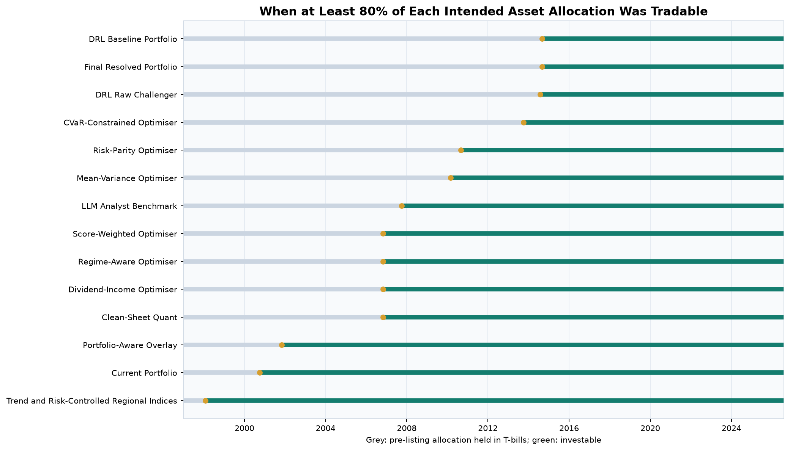
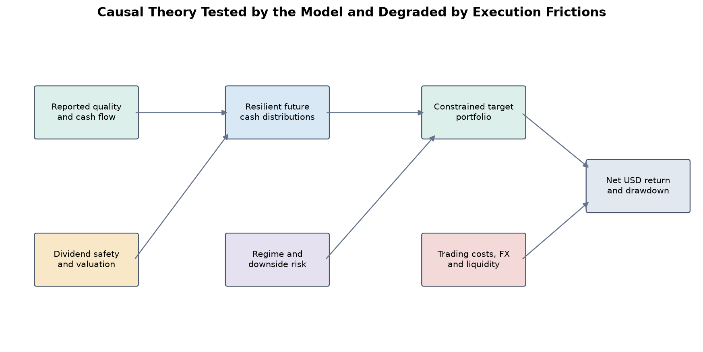
Bias and Limitation Register
| category | severity | applies_to | status | treatment |
|---|---|---|---|---|
| selection look-ahead | CRITICAL | all current portfolio-output replays | ACKNOWLEDGED | Labelled retrospective holdings replay; excluded from claims of 1997 model selection skill. |
| survivorship bias | CRITICAL | current selected securities | ACKNOWLEDGED | Pre-listing capital stays in T-bills; current holdings are never presented as a historical universe. |
| point-in-time model evidence | HIGH | full stock-selection strategy | SEPARATED | The dated reconstructed decision history is reported separately and never spliced into the long replay. |
| corporate actions | MEDIUM | holding histories | MODELED | Yahoo adjusted closes include splits and distributions where provider history supports them. |
| currency conversion | MEDIUM | non-USD holdings and indices | MODELED | Historical FRED FX converts local adjusted closes to USD; ECU bridges pre-euro observations. |
| benchmark dividend consistency | MEDIUM | regional price indices | WARNING | DAX is a performance index; other regional index series may omit dividends. SPY is included as a total-return proxy. |
| transaction costs and liquidity | MEDIUM | portfolio outputs and index challenger | MODELED | Commission, spread, slippage, square-root impact, missing-ADV penalty, and 5% ADV caps are reported. |
| annual bank AUM charge | MEDIUM | portfolio outputs and index challenger | MODELED | A 25 bp charge is deducted once each December from then-current AUM; external benchmarks remain uncharged references. |
| conditional regime analysis | MEDIUM | rate, market, and recession tables | DESCRIPTIVE | Rate and market inputs are lagged one month; NBER recession labels are retrospective and are not presented as tradable signals. |
| macro-event windows | MEDIUM | event comparisons and shaded plots | DESCRIPTIVE | Configured market-response windows overlap monthly returns and do not assert legal conflict dates or isolate causal effects. |
| short-sale constraints | LOW | all tested portfolios | NOT_APPLICABLE | Every tested allocation is long-only; no borrow availability or fee assumption is required. |
| multiple testing | HIGH | portfolio comparison | CONTROLLED | Sidak, Deflated Sharpe, block-bootstrap max-t, duplicate-trial removal, and CSCV PBO are reported. |
| deployable alpha | CRITICAL | strategy-selection claims | NOT_ESTABLISHED | Retrospective alpha is diagnostic only; approval requires native point-in-time outperformance with sufficient history. |
| non-stationarity | HIGH | all historical and simulated evidence | RESIDUAL_RISK | Embargo, subperiod plots, block resampling, fat tails, and EWMA volatility expose but cannot remove structural breaks. |
The limitation register distinguishes modeled, controlled, separated, and unresolved risks. The critical issue is that current holdings survived long enough to be selected today, so the 1997 replay cannot prove selection skill.
Point-in-Time Model Evidence
The repository's reconstructed model walk-forward is not spliced into the 1997 holdings replay. It remains a separate, shorter evidence set because it uses dated model decisions and realised outcomes.
| strategy | observations | annualised_return | annualised_volatility | sharpe | maximum_drawdown | annualised_cost_drag | evidence_mode |
|---|---|---|---|---|---|---|---|
| wolf_cvar | 60 | 13.29% | 10.07% | 1.32 | -10.07% | 0.82% | reconstructed_pit_proxy |
| equal_weight_eligible | 60 | 15.72% | 12.73% | 1.23 | -14.85% | 0.68% | reconstructed_pit_proxy |
| cap_weight_eligible | 60 | 10.22% | 11.06% | 0.92 | -15.05% | 0.75% | reconstructed_pit_proxy |
Point-in-Time Alpha Tests
| strategy | benchmark | observations | annualised_active_return | Regression alpha | NW t-stat | NW p-value | Extra cost drag | Alpha verdict | Deployable alpha |
|---|---|---|---|---|---|---|---|---|---|
| wolf_cvar | cap_weight_eligible | 60 | 2.67% | 5.33% | 2.094 | 0.0362 | 0.06% | NOT_SIGNIFICANT | NOT_ESTABLISHED |
| wolf_cvar | equal_weight_eligible | 60 | -2.44% | 4.38% | 1.376 | 0.1687 | 0.14% | NOT_SIGNIFICANT | NOT_ESTABLISHED |
The point-in-time table contains 60 dated decision months and remains separate from the long holdings replay. It is the more relevant evidence for decisions made with contemporaneous data. Against equal-weight eligible stocks, annualised active return is -2.44% and the alpha verdict is NOT_SIGNIFICANT. Against cap-weight eligible stocks, annualised active return is 2.67% and the verdict is NOT_SIGNIFICANT. Native live evidence and at least 60 months are required before alpha can be considered deployable.
Research evidence only. The paper used as the methodological specification is The Three Types of Backtests (Joubert, Sestovic, Barziy, Distaso, and Lopez de Prado, 29 July 2024). Raw Yahoo Finance and FRED histories remain outside Git; compact outputs, manifests, and checksums are included.